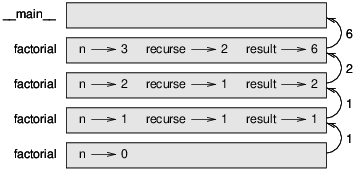

Beaucoup de fonctions Python que nous avons utilisées, telles que les fonctions mathématiques, produisent des valeurs de retour. Mais les fonctions que nous avons écrites sont toutes vides: elles ont un effet, comme imprimer un valeur ou le déplacement d’une tortue, mais ils n’ont pas de valeur de retour. Dans ce chapitre, vous apprendrez à écrire des fonctions fructueuses.
L’appel de la fonction génère une valeur de retour, que nous l’affectons généralement à une variable ou à une utilisation. dans le cadre d’une expression.
e = math.exp (1.0)
height = radius * math.sin (radians)
Les fonctions que nous avons écrites jusqu’à présent sont nulles. Parlant avec désinvolture, ils n’ont aucun valeur de retour; plus précisément, leur valeur de retour est None. Dans ce chapitre, nous allons (enfin) écrire des fonctions fructueuses. Le premier exemple est la zone, qui renvoie l’aire d’un cercle du rayon donné:
def area(radius):
a = math.pi * radius**2
return a
Nous avons vu la déclaration de retour avant, mais dans une fonction fructueuse la déclaration de retour comprend une expression. Cette déclaration signifie: “Retourner immédiatement de cette fonction et utilisez l’expression suivante comme valeur de retour. “L’expression peut être arbitrairement compliqué, nous aurions pu écrire cette fonction de manière plus concise:
def area(radius):
return math.pi * radius**2
En revanche, des variables temporaires telles que a peuvent faciliter le débogage. Parfois, il est utile d’avoir plusieurs instructions de retour, une dans chaque branche d’un conditionnel:
def absolute_value(x):
if x < 0:
return -x
else:
return x
Comme ces instructions de retour sont dans une autre condition, une seule est exécutée. Dès qu’une instruction de retour s’exécute, la fonction se termine sans exécuter les instructions suivantes. Partie de code qui apparaît après une déclaration de retour, ou tout autre endroit que le flux de l’exécution ne peut jamais atteindre, s’appelle le code mort. Dans une fonction fructueuse, il est conseillé de s’assurer que chaque chemin possible du programme rencontre une déclaration de retour. Par exemple:
def absolute_value(x):
if x < 0:
return -x
if x > 0:
return x
Cette fonction est incorrecte car si x se trouve être 0, ni la condition est vraie, et le fonction se termine sans frapper une déclaration de retour. Si le flux d’exécution arrive à la fin d’une fonction, la valeur de retour est None, ce qui n’est pas la valeur absolue de 0.
>>> print(absolute_value(0))
None
Par ailleurs, Python fournit une fonction intégrée appelée abs qui calcule des valeurs absolues. Comme exercice, écrire une fonction de comparaison prend deux valeurs, x et y, et renvoie 1 si x > y, 0 si x == y et -1 si x < y.
Au fur et à mesure que vous écrivez des fonctions plus grandes, vous risquez de devoir passer plus de temps à déboguer. Pour gérer des programmes de plus en plus complexes, vous pouvez essayer un processus appelé développement incrémentiel. Le développement incrémentiel a pour but d’éviter le débogage de long sessions en ajoutant et en testant seulement une petite quantité de code à la fois. Par exemple, supposons que vous souhaitiez trouver la distance entre deux points, donnée par les coordonnées (x1, y1) et (x2, y2). Par le théorème de Pythagore, la distance est:
distance = √(x2 − x1)2 + (y2 − y1)2
La première étape consiste à examiner à quoi devrait ressembler une fonction de distance en Python. En d’autre mots, quelles sont les entrées (paramètres) et quelle est la sortie (valeur de retour)? Dans ce cas, les entrées sont deux points que vous pouvez représenter en utilisant quatre chiffres. La valeur de retour est la distance représentée par une valeur à virgule flottante. Immédiatement, vous pouvez écrire un aperçu de la fonction:
def distance(x1, y1, x2, y2):
return 0.0
Evidemment, cette version ne calcule pas les distances; il retourne toujours zéro. Mais il est syntaxiquement correct et fonctionne, ce qui signifie que vous pouvez le tester avant de le rendre plus compliqué. Pour tester la nouvelle fonction, appelez-la avec des exemples d’arguments:
>>> distance(1, 2, 4, 6)
0.0
J’ai choisi ces valeurs pour que la distance horizontale soit de 3 et la distance verticale de 4; ainsi, le résultat est 5, l’hypoténuse d’un triangle 3-4-5. Lors du test d’une fonction, il est utile de connaître la bonne réponse. A ce stade, nous avons confirmé que la fonction est syntaxiquement correcte, et nous pouvons commencer ajouter du code au corps. Une prochaine étape raisonnable consiste à trouver les différences x2 - x1 et y2 - y1. La prochaine version stocke ces valeurs dans des variables temporaires et les imprime. def distance(x1, y1, x2, y2):
def distance(x1, y1, x2, y2):
dx = x2 - x1
dy = y2 - y1
print('dx is', dx)
print('dy is', dy)
return 0.0
Si la fonction fonctionne, elle devrait afficher dx 3 et dy 4. Si oui, nous savons que le la fonction consiste à obtenir les bons arguments et à effectuer le premier calcul correctement. Si non, il n’y a que quelques lignes à vérifier. Ensuite, nous calculons la somme des carrés de dx et dy: def distance(x1, y1, x2, y2):
def distance(x1, y1, x2, y2):
dx = x2 - x1
dy = y2 - y1
dsquared = dx**2 + dy**2
print('dsquared is: ', dsquared)
return 0.0
Encore une fois, vous devez exécuter le programme à ce stade et vérifier le résultat (qui doit être 25). Enfin, vous pouvez utiliser math.sqrt pour calculer et renvoyer le résultat:
def distance(x1, y1, x2, y2):
dx = x2 - x1
dy = y2 - y1
dsquared = dx**2 + dy**2
result = math.sqrt(dsquared)
return result
Si cela fonctionne correctement, vous avez terminé. Sinon, vous pouvez imprimer la valeur du résultat avant la déclaration de retour. La version finale de la fonction n’affiche rien quand elle s’exécute; il ne fait que retourner une valeur. Les instructions d’impression que nous avons écrites sont utiles pour le débogage, mais une fois que vous obtenez le fonction de travail, vous devez les supprimer. Les codes comme cela s’appellent échafaudage car ils sont utiles pour construire le programme mais ne fait pas partie du produit final. Lorsque vous commencez, vous ne devez ajouter qu’une ligne ou deux de code à la fois. Comme vous gagnez plus d’expérience, vous pourriez vous retrouver à écrire et à déboguer de plus gros morceaux. D’une manière ou d’une autre, le développement incrémentiel peut vous faire économiser beaucoup de temps de débogage. Les aspects clés du processus sont les suivants:
Commencez par un programme de travail et apportez de petites modifications incrémentielles. A tout moment, si il y a une erreur, vous devriez avoir une bonne idée de la situation.
Utilisez des variables pour contenir des valeurs intermédiaires afin de pouvoir les afficher et les vérifier.
Une fois que le programme fonctionne, vous pouvez supprimer une partie de l’échafaudage ou consolider plusieurs instructions dans des expressions composées, mais seulement si elles ne le font pas rendre le programme difficile à lire.
Comme exercice, utilisez le développement incrémental pour écrire une fonction appelée hypoténuse qui renvoie la longueur de l’hypoténuse d’un triangle rectangle étant donné la longueur des deux autres jambes comme arguments. Enregistrez chaque étape du processus de développement au fur et à mesure.
Comme vous vous en doutez, vous pouvez appeler une fonction depuis une autre. Par exemple, nous allons écrire une fonction qui prend deux points, le centre du cercle et un point sur le périmètre, et calcule l’aire du cercle. Supposons que le point central est stocké dans les variables xc et yc et que le point de périmètre est dans xp et yp. La première étape consiste à trouver le rayon du cercle, qui est la distance entre les deux points. Nous venons écrire une fonction, distance, qui fait cela:
radius = distance(xc, yc, xp, yp)
L’étape suivante consiste à trouver l’aire d’un cercle avec ce rayon; nous venons d’écrire cela aussi:
result = area(radius)
En encapsulant ces étapes dans une fonction, nous obtenons:
def circle_area(xc, yc, xp, yp):
radius = distance(xc, yc, xp, yp)
result = area(radius)
return result
Les variables temporaires radius et result sont utiles pour le développement et le débogage, mais une fois que le programme fonctionne, nous pouvons le rendre plus concis en composant les fonctions d’appels:
def circle_area(xc, yc, xp, yp):
return area(distance(xc, yc, xp, yp))
Les fonctions peuvent renvoyer des valeurs booléennes, ce qui est souvent pratique pour cacher des tests compliqués à l’intérieur de fonctions. Par exemple:
def is_divisible(x, y):
if x % y == 0:
return True
else:
return False
Il est courant de donner des noms de fonctions booléens qui sonnent comme des questions oui / non; is_divisible renvoie True ou False pour indiquer si x est divisible par y. Voici un exemple:
>>> is_divisible(6, 4)
False
>>> is_divisible(6, 3)
True
Le résultat de l’opérateur == est un booléen, de sorte que nous pouvons écrire la fonction de manière plus concise en le retournant directement:
def is_divisible(x, y):
return x % y == 0
Les fonctions booléennes sont souvent utilisées dans les instructions conditionnelles:
if is_divisible(x, y):
print('x is divisible by y')
Il pourrait être tentant d’écrire quelque chose comme:
if is_divisible(x, y) == True:
print('x is divisible by y')
Mais la comparaison supplémentaire est inutile.
En tant qu’exercice, écrivez une fonction is_between (x, y, z) qui renvoie True si x ≤ y ≤ z ou
False sinon.
Nous avons seulement couvert un petit sous-ensemble de Python, mais vous pourriez être intéressé de savoir que ce sous-ensemble est un langage de programmation complet, ce qui signifie que tout ce qui peut être calculé peut être exprimé dans cette langue. Tout programme jamais écrit pourrait être réécrit en utilisant uniquement les fonctionnalités de langue que vous avez apprises jusqu’à présent (en fait, vous auriez besoin de quelques commandes pour contrôler les périphériques comme la souris, les disques, etc., mais c’est tout). Prouver que cette affirmation n’est pas banale, voici un exercice accompli d’abord par Alan Turing, un des premiers informaticiens (certains diront qu’il était mathématicien, mais beaucoup d’informaticiens ont commencé comme mathématiciens). En conséquence, il est connu sous le nom du Thèse Turing. Pour une discussion plus complète (et précise) de la thèse de Turing, je vous recommande le livre de Michael Sipser Introduction to the Theory of Computation. Pour vous donner une idée de ce que vous pouvez faire avec les outils que vous avez appris jusqu’à présent, nous évaluerons quelques fonctions mathématiques définies récursivement. Une définition récursive est similaire à une définition circulaire, en ce sens que la définition contient une référence à la chose défini. Une définition vraiment circulaire n’est pas très utile:
vorpal: un adjectif utilisé pour décrire quelque chose qui est vorpal.
Si vous avez vu cette définition dans le dictionnaire, vous pourriez être ennuyé. D’autre part, si vous avez regardé la définition de la fonction factorielle, notée avec le symbole!, vous pourrait obtenir quelque chose comme ça:
0! = 1
n! = n (n - 1)!
Cette définition dit que la factorielle de 0 est 1 et que la factorielle de toute autre valeur, n, est n multiplié par la factorielle de n - 1. Donc 3! est 3 fois 2!, ce qui correspond à 2 fois 1!, soit 1 fois 0 !. Tout rassembler, 3! est égal à 3 fois 2 fois 1 fois 1, soit 6. Si vous pouvez écrire une définition récursive de quelque chose, vous pouvez écrire un programme Python sur l’évaluez La première étape consiste à décider quels devraient être les paramètres. Dans ce cas, il devrait être clair que factorial prend un entier:
def factorial(n):
Si l’argument arrive à 0, il suffit de retourner 1:
def factorial(n):
if n == 0:
return 1
Sinon, et ceci est la partie intéressante, nous devons faire un appel récursif pour trouver le factorielle de n - 1 puis multiplie-la par n:
def factorial(n):
if n == 0:
return 1
else:
recurse = factorial(n-1)
result = n * recurse
return result
Le flux d’exécution de ce programme est similaire au flux de compte à rebours de la section 5.8. Si nous appelons factorial avec la valeur 3: Puisque 3 n’est pas 0, nous prenons la deuxième branche et calculons la factorielle de n-1 … Puisque 2 n’est pas 0, nous prenons la deuxième branche et calculons la factorielle de n-1 … Puisque 1 n’est pas 0, nous prenons la deuxième branche et calculons la factorielle de n-1 … Puisque 0 est égal à 0, nous prenons la première branche et retournons 1 sans faire plus d’appels récursifs. La valeur de retour, 1, est multipliée par n, qui est 1, et le résultat est revenu. La valeur de retour, 1, est multipliée par n, qui est 2, et le résultat est renvoyé. La valeur de retour (2) est multipliée par n, qui est 3, et le résultat 6 devient le retour valeur de l’appel de fonction qui a démarré tout le processus. La figure 6.1 montre à quoi ressemble le diagramme de la pile pour cette séquence d’appels de fonction. Les valeurs de retour sont affichées lors de la remontée de la pile. Dans chaque cadre, le retour valeur est la valeur du résultat, qui est le produit de n et recurse. Dans la dernière exemple, les variables locales recurse et result n’existent pas, car la branche qui les a crée ne fonctionne pas.

Suivre le flux d’exécution est une façon de lire les programmes, mais elle peut rapidement devenir accablant. Une alternative est ce que j’appelle le “leap of faith”. Quand vous arrivez à un fonction appel, au lieu de suivre le flux d’exécution, vous supposez que la fonction fonctionne correctement et renvoie le bon résultat. En fait, vous pratiquez déjà cet acte de foi lorsque vous utilisez des fonctions intégrées. Quand vous appelez math.cos ou math.exp, vous n’examinez pas les corps de ces fonctions. Nous supposons qu’ils fonctionnent parce que les personnes qui ont écrit les fonctions intégrées étaient de bons programmeurs. La même chose est vraie lorsque vous appelez l’une de vos propres fonctions. Par exemple, dans la section 6.4, nous avons écrit une fonction appelée is_divisible qui détermine si un nombre est divisible par un autre. Une fois que nous nous sommes convaincus que cette fonction est correcte, en examinant le code et test - nous pouvons utiliser la fonction sans regarder à nouveau le corps. La même chose est vraie pour les programmes récursifs. Lorsque vous arrivez à l’appel récursif, au lieu de suivre le flux d’exécution, vous devez supposer que l’appel récursif fonctionne (retourne le résultat correct) et puis demandez-vous, “En supposant que je peux trouver la factorielle de n - 1, puis-je calculer la factorielle de n? “Il est clair que vous pouvez, en multipliant par n. Bien sûr, c’est un peu étrange de supposer que la fonction fonctionne correctement lorsque vous n’avez pas fini de l’écrire, mais c’est pourquoi on appelle cela un acte de foi!
Après factorielle, l’exemple le plus commun d’une fonction mathématique définie récursivement est fibonacci, qui a la définition suivante (voir http://en.wikipedia.org/wiki/Fibonacci_number):
fibonacci(0) = 0
fibonacci(1) = 1
fibonacci(n) = fibonacci(n−1) + fibonacci(n−2)
Traduit en Python, il ressemble à ceci:
def fibonacci(n):
if n == 0:
return 0
elif n == 1:
return 1
else:
return fibonacci(n-1) + fibonacci(n-2)
Si vous essayez de suivre le flux d’exécution ici, même pour des valeurs assez petites de n, votre tête explose. Mais selon le saut de foi, si vous supposez que les deux appels récursifs fonctionnent correctement, il est clair que vous obtenez le bon résultat en les ajoutant ensemble.
Que se passe-t-il si nous appelons factorial et lui donnons 1,5 comme argument?
>>> factorial(1.5)
RuntimeError: Maximum recursion depth exceeded
Cela ressemble à une récursion infinie. Comment ça peut survenir? La fonction a un cas de base lorsque n == 0. Mais si n n’est pas un nombre entier, nous pouvons rater le cas de base et récurer pour toujours. Dans le premier appel récursif, la valeur de n est 0,5. Dans le prochain, c’est -0.5. De là, ça devient plus petit (plus négatif), mais il ne sera jamais 0. Nous avons deux choix. Nous pouvons essayer de généraliser la fonction factorielle pour travailler avec les nombres à virgule flottante, ou nous pouvons faire factoriel vérifier le type de son argument. le La première option est appelée fonction gamma et dépasse un peu la portée de ce livre. Alors nous irons pour le second. Nous pouvons utiliser la fonction intégrée isinstance pour vérifier le type de l’argument. Tandis que nous y sommes, nous pouvons également nous assurer que l’argument est positif:
def factorial(n):
if not isinstance(n, int):
print('Factorial is only defined for integers.')
return None
elif n < 0:
print('Factorial is not defined for negative integers.')
return None
elif n == 0:
return 1
else:
return n * factorial(n-1)
Le premier cas de base gère les non-entiers; le second traite les entiers négatifs. À la fois Dans certains cas, le programme imprime un message d’erreur et renvoie None pour indiquer que quelque chose s’est mal passé:
>>> print(factorial('fred'))
Factorial is only defined for integers.
None
>>> print(factorial(-2))
Factorial is not defined for negative integers.
None
Si nous passons les deux vérifications, nous savons que n est positif ou nul, nous pouvons donc prouver que le la récursivité se termine. Ce programme montre un modèle parfois appelé un tuteur. Les deux premières conditions agissent comme des gardiens, protégeant le code qui découle des valeurs susceptibles de provoquer Erreur. Les gardiens permettent de prouver l’exactitude du code. Dans la section 11.4, nous verrons une alternative plus flexible à l’impression d’un message d’erreur: une exception.
Briser un grand programme en fonctions plus petites crée des points de contrôle naturels pour le débogage. Si une fonction ne fonctionne pas, vous avez trois possibilités:
Il y a quelque chose qui ne va pas dans les arguments obtenus par la fonction. une condition préalable est violé.
Il y a quelque chose qui ne va pas dans la fonction; une post-condition est violée.
Il y a un problème avec la valeur de retour ou la manière dont elle est utilisée.
Pour exclure la première possibilité, vous pouvez ajouter un relevé d’impression au début du fonction et afficher les valeurs des paramètres (et peut-être leurs types). Ou vous pouvez écrire le code qui vérifie explicitement les conditions préalables. Si les paramètres sont corrects, ajoutez une instruction print avant chaque instruction de retour et afficher la valeur de retour. Si possible, vérifiez le résultat à la main. Envisagez d’appeler la fonction avec des valeurs facilitant la vérification du résultat (comme dans la section 6.2). Si la fonction semble fonctionner, regardez l’appel de fonction pour vous assurer que la valeur de retour est utilisé correctement (ou utilisé du tout!). L’ajout d’instructions d’impression au début et à la fin d’une fonction peut aider à exécution plus visible. Par exemple, voici une version de factorial avec des instructions d’impression:
def factorial(n):
space = ' ' * (4 * n)
print(space, 'factorial', n)
if n == 0:
print(space, 'returning 1')
return 1
else:
recurse = factorial(n-1)
result = n * recurse
print(space, 'returning', result)
return result
L’espace est une chaîne de caractères d’espace qui contrôle l’indentation de la sortie. Voici la résultat de la factorielle (4):
factorial 4
factorial 3
factorial 2
factorial 1
factorial 0
returning 1
returning 1
returning 2
returning 6
returning 24
Si vous ne comprenez pas le déroulement de l’exécution, ce type de résultat peut être utile. Ça prend un peu de temps pour développer des échafaudages efficaces, mais un petit échafaudage peut économiser beaucoup de débogage.
variable temporaire: variable utilisée pour stocker une valeur intermédiaire dans un calcul complexe.
code mort: partie d’un programme qui ne peut jamais s’exécuter, souvent parce qu’il apparaît après un déclaration de retour.
développement incrémental: Un plan de développement de programme destiné à éviter le débogage par ajouter et tester seulement une petite quantité de code à la fois.
échafaudage: code utilisé lors du développement du programme mais ne faisant pas partie de la finale version.
guardian: Un modèle de programmation qui utilise une instruction conditionnelle pour rechercher et gérer des circonstances pouvant provoquer une erreur.
Exercice 1
Dessinez un diagramme de pile pour le programme suivant. Qu’est-ce que le programme imprime?
def b(z):
prod = a(z, z)
print(z, prod)
return prod
def a(x, y):
x = x + 1
return x * y
def c(x, y, z):
total = x + y + z
square = b(total)**2
return square
x = 1
y = x + 1
print(c(x, y+3, x+y))
Exercise 2
La fonction Ackermann, A(m, n) est définie comme suit:
A(m, n) =
⎧
⎪ n+1 if m = 0
⎨ A(m−1, 1) if m > 0 and n = 0
⎪ A(m−1, A(m, n−1)) if m > 0 and n > 0.
⎩
Voir http://en.wikipedia.org/wiki/Ackermann_function. Ecrivez une fonction nommée ack
qui évalue la fonction Ackermann. Utilisez votre fonction pour évaluer ack(3, 4), qui devrait être 125. Que se passe-t-il pour les plus grandes valeurs de m et n? Solution: http://thinkpython2.com/code/ackermann.py.
Exercice 3
Un palindrome est un mot qui est orthographié de la même façon de gauche à droite et de droite à gauche, comme “noon” et “redivider”. Récursivement, un mot est un palindrome si les première et dernière lettres sont identiques et le milieu est un palindrome. Les fonctions suivantes prennent un argument de type string et renvoient les lettres du premier, du dernier et du milieu:
def first(word):
return word[0]
def last(word):
return word[-1]
def middle(word):
return word[1:-1]
Nous verrons comment ils fonctionnent dans le chapitre 8.
Saisissez ces fonctions dans un fichier nommé palindrome.py et testez-les. Ce qui se passe si vous appelez le milieu avec une chaîne avec deux lettres? Une lettre? Qu’en est-il de la chaîne vide, qui est écrit ‘’ et ne contient pas de lettres?
Écrivez une fonction appelée is_palindrome qui prend un argument de chaîne et renvoie True si elle est un palindrome et faux autrement. Rappelez-vous que vous pouvez utiliser la fonction intégrée len pour vérifier la longueur d’une chaîne. Solution: http://thinkpython2.com/code/palindrome_soln.py.
Exercice 4
Un nombre, a, est une puissance de b s’il est divisible par b et a / b est une puissance de b. Écrire un fonction appelée is_power qui prend les paramètres a et b et renvoie True si a est une puissance de b. Remarque: vous devrez penser au cas de base.
Exercice 6.5
Le plus grand diviseur commun (GDC) de a et b est le plus grand nombre qui divise les deux sans reste.Une façon de trouver le GDC de deux nombres est basée sur l’observation que si r est le reste a est divisé par b, alors gcd(a, b) = gcd (b, r). En tant que cas de base, nous pouvons utiliser gcd (a, 0) = a. Ecrivez une fonction appelée gdc qui prend les paramètres a et b et retourne leur plus grand commun diviseur.
Crédit: Cet exercice est basé sur un exemple tiré de Structure and Interpretation of Computer Programs d’Abelson et Sussman.